Bodhgaya
Lieu Saint du Bouddhisme
Bodhgaya : un symbole oriental
Dans la culture orientale, plus précisément dans le bouddhisme, Bodhgaya est considérée comme le “nombril” du monde. Cette ville est un lieu majeur dans l’histoire de cette religion. C’est en ses lieux, au Ve siècle avant notre ère, que le prince Siddhartha Gautama a atteint l’éveil. Il est ainsi devenu Bouddha. Cet événement marque la naissance du bouddhisme.
Sa localisation géographique
Bodhgaya se situe au Nord-Est de l’Inde. Dans la province du Bihar.
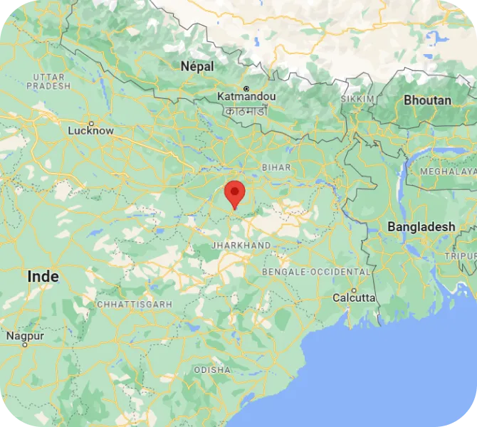Le bouddhisme : une religion, une philosophie ?
Nous parlons du bouddhisme comme une religion depuis le début. Cependant, est-ce réellement une religion en son sens le plus stricte ? Contrairement aux religions occidentales, le bouddhisme n’adore pas un dieu, créateur de l’univers, envers lequel il faut être sauvés. Le bouddhisme offre des enseignements de vie. Chaque Homme, selon sa volonté, les suit ou non, dans le but d’atteindre sa vision du salut. Les adeptes de cette religion ne prient pas un dieu pour montrer son dévouement. Mais plutôt pour montrer son respect envers la sagesse de cet homme.
Lieux majeurs de Bodhgaya
Afin de mieux connaître la ville Bodhgaya, voici les différents lieux qui font de cette ville un lieu majeur
L'arbre Bodhi
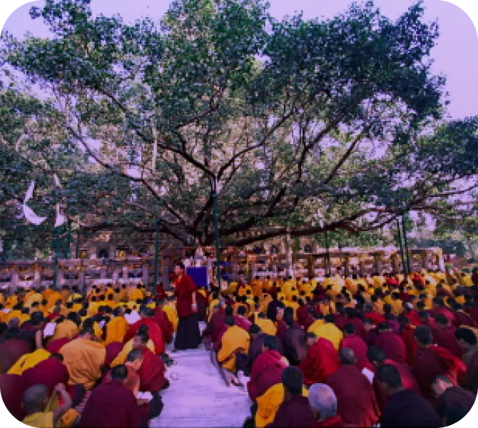L’arbre Bodhi est celui sous lequel le prince Siddhartha est resté plus d’un mois en méditation. Au bout de cette durée, il atteint l’éveil. C’est sous l’arbre Bodhi, qu’il est devenu Bouddha. À l’endroit précis où il se trouvait, l’Empereur Ashoka a fait construire le trône de diamant.
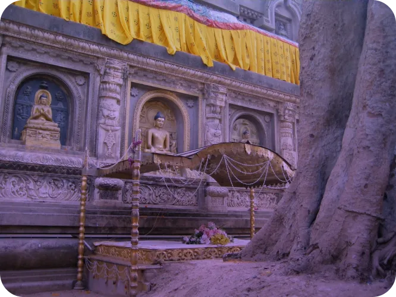Le temple Mahabodhi
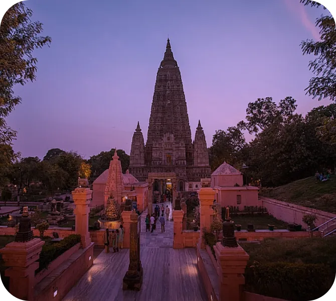Le temple Mahabodhi est le lieu principal de la ville de Bodhgaya. Il s'est bâti autour de l’arbre Bodhi. Ce qui fait de lui, un lieu de pèlerinage majeur. C'est au VIIe siècle que ce temple fût construit. Depuis 2002, il est entré, par l’UNESCO, dans les sites du patrimoine mondial.
La grande statue du Bouddha
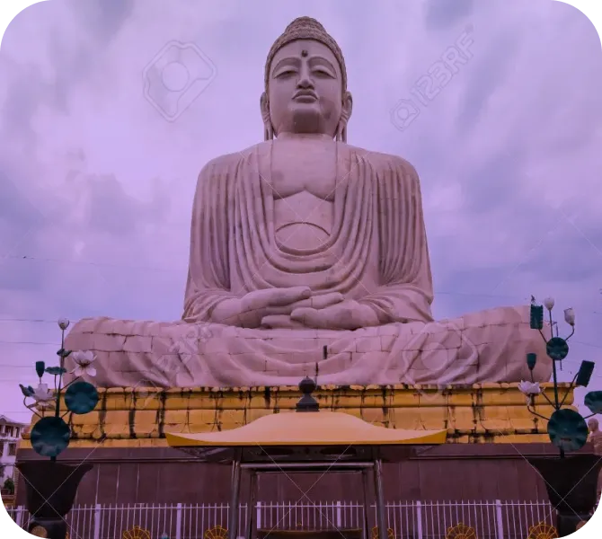La statue du grand Bouddha est non seulement un lieu majeur pour l’aspect religieux, mais aussi pour l’aspect touristique. Sa construction date de 1989, par le XIV Dalaï Lama. Elle représente le Bouddha en activité de méditation. Elle mesure, au total, 24 mètres de hauteur.
Les 4 principaux lieux de pèlerinages du bouddhisme
Lumbini
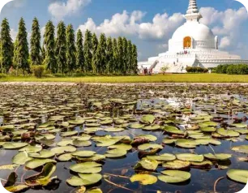Le prince Siddhartha Gautama est né dans le village de Lumbini. Il se situe au Népal, proche de la frontière de l’Inde.
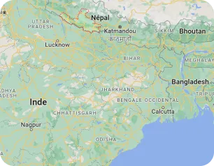Sarnath
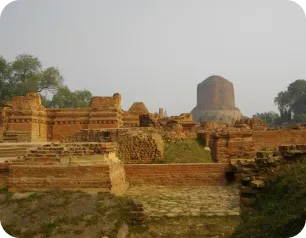Sarnath représente l'endroit où Bouddha donna son premier enseignement. Enseignement connu sous le nom du “Sermon de la Roue de Dharma".
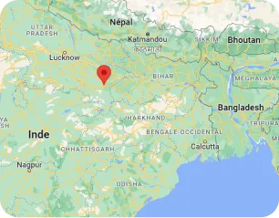Bouddha expose les quatre nobles vérités (Dukkha ; Samudaya ; Nirodha ; Magga). Cet événement s’est passé deux mois après son éveil.
Kushiniagar
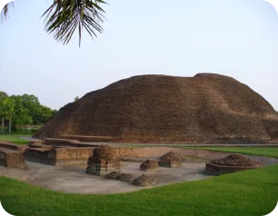C’est à Kushinagar que Bouddha prononça ses dernières paroles et entra au Parinirvana.
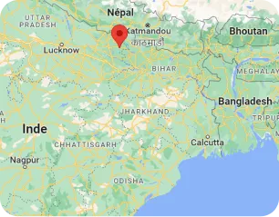Le prochain article montre le message transmis par l'œuvre d’Hermann Hesse, inspirée par la vie du Bouddha.